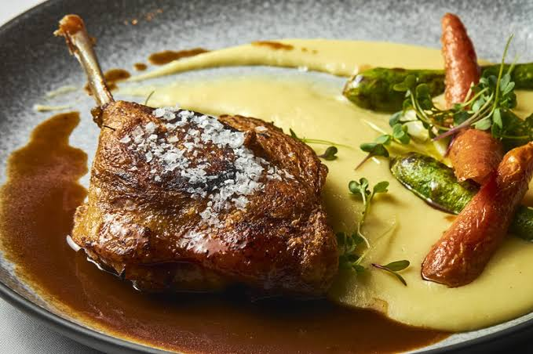
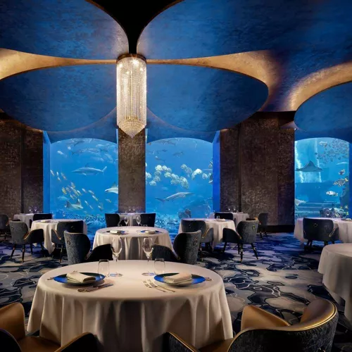
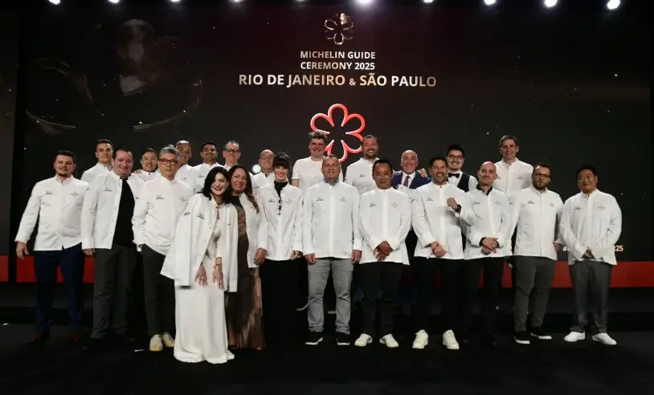

Bastidores
O que ninguém vê é o que mais importa.
Antes de qualquer prato chegar à mesa, existem horas de organização silenciosa: cortes planejados, tempos calculados, testes que ninguém prova além de mim. É nesse tempo invisível que a experiência inteira é construída.
Processo criativo
Cada menu começa com uma pergunta.
Não crio cardápios genéricos. Antes de qualquer receita, pergunto: quem vai estar à mesa, o que essa ocasião significa, o que eu quero que essas pessoas sintam. O prato é sempre a resposta, nunca o ponto de partida.



Atendimento
Cozinho para pessoas, não para pratos.
Cada conversa antes de um evento é parte da receita. Restrições, memórias afetivas, aquele prato que lembra alguém especial — tudo isso entra no menu. Quando um convidado sente que o jantar foi feito só para ele, eu sei que fiz meu trabalho direito.